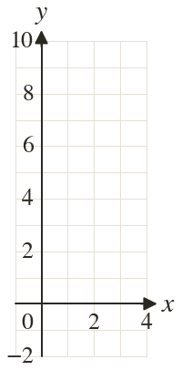
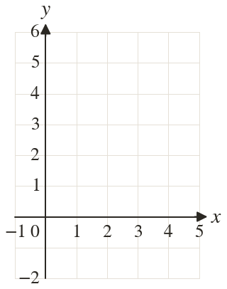
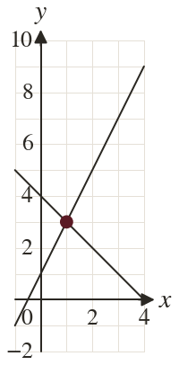
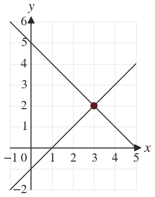

Westonbirt Maths · Simultaneous Equations and Graphs
Simultaneous Equations Graphically
Name: ______________________ Date: ____________
1
Rearrange into the form = mx +
2
Rearrange into the form = mx +
3
Draw and for from to
Where do they cross?
Where do they cross?
4
Draw and for from to
Where do they cross?
Where do they cross?
5
Ali rearranges as
What has he done wrong?
What has he done wrong?
Ext
Rearrange
Without drawing, find where it crosses
Without drawing, find where it crosses



